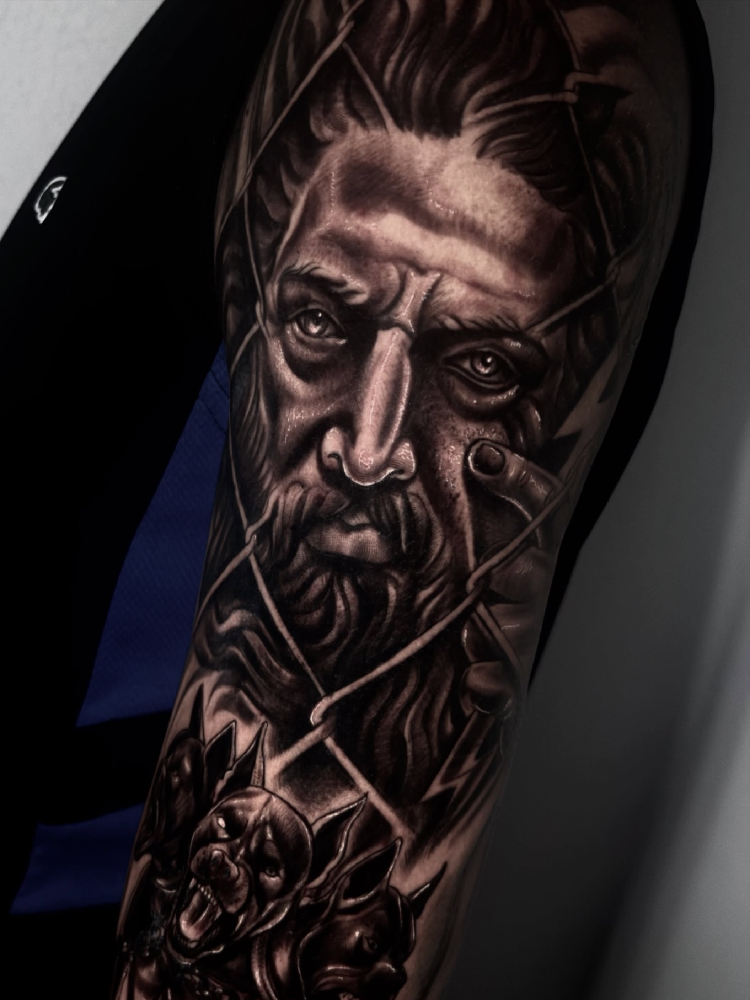
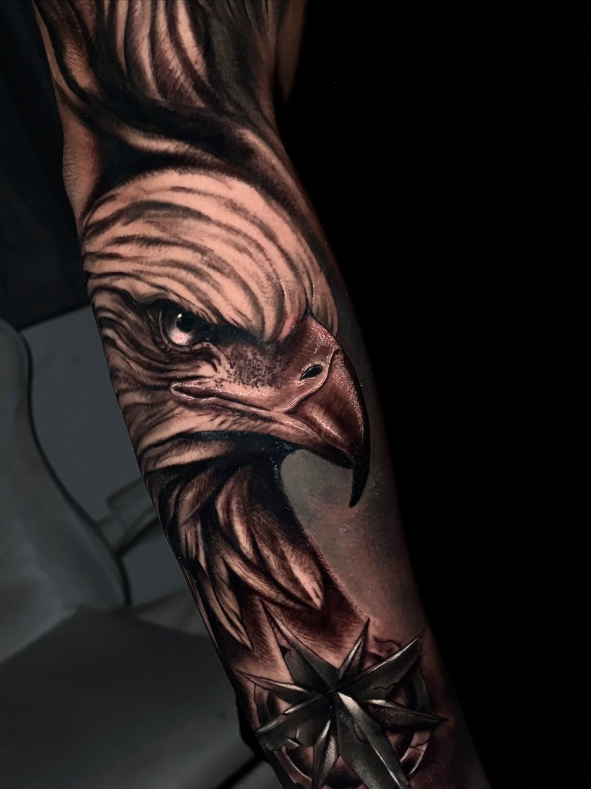
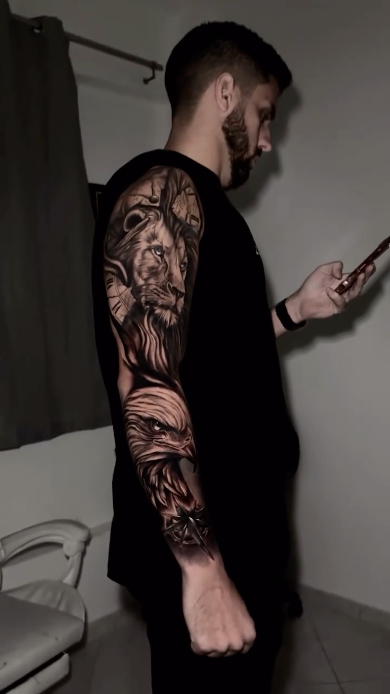
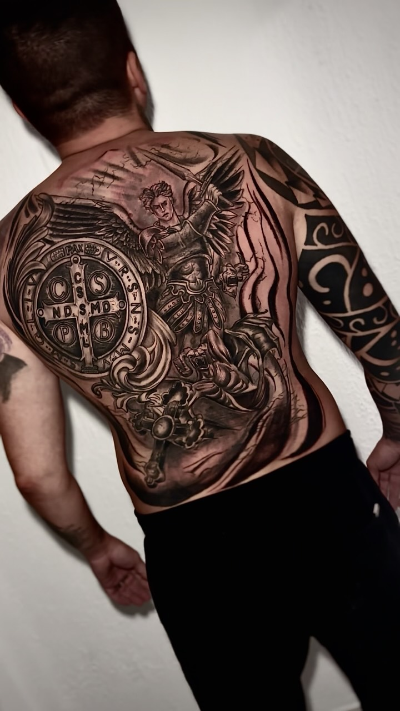

Ato 01
Sentimento esculpido na pele

Minha trajetória na tatuagem começou em 2024, com trabalhos mais simples e muita dedicação ao estudo e à prática. Com o tempo, fui aprimorando minha técnica e encontrei minha identidade no preto e cinza e no realismo.
Desde então, venho desenvolvendo trabalhos cada vez mais complexos, buscando evolução constante em técnica, composição e acabamento.
Hoje, já conto com mais de 10 premiações em competições online, um reconhecimento que representa parte dessa trajetória de evolução e dedicação à tatuagem.
Meu objetivo é transformar cada projeto em uma peça marcante, unindo técnica, realismo e identidade.
Uma linguagem construída em camadas de sombra, luz e detalhe — onde o preto e o cinza revelam mais do que a cor poderia.
Uma jornada visual em quatro atos — do primeiro traço à pele cicatrizada.




“Sentimento esculpido na pele”
Patrick Leone — Black & Grey Realism
Uma seleção de peças autorais em Black & Grey Realism.
O cliente apresenta a ideia.
Patrick desenvolve a composição pensando em anatomia, proporção e estética.
O projeto ganha vida na pele.
O resultado final revela o trabalho.
Uma trajetória construída através de experiências, eventos e conexões.
Patrick Leone participou do Planet Tattoo, onde realizou um trabalho na perna de sua tela. Ao lado esteve com pessoas que se tornaram referências importantes em sua trajetória, entre elas Alexandre Dallier, Cris Nieiro e seu amigo próximo Ink Mali.
Patrick Leone participou do Tattoo Fun Fest Araruama, onde realizou o projeto Teotônio Ink. A experiência também marcou um momento importante de sua trajetória, no qual conheceu pessoas que depois se tornaram grandes referências pessoais.
Patrick Leone viajou para João Pessoa para realizar um guest tattoo no estúdio de seu amigo @roytattoo. Essa experiência marcou o início de uma grande parceria e amizade.
Encontre uma estimativa inicial para o seu projeto em Black & Grey Realism.
01 — Local de preferência
02 — Tipo de projeto
03 — Estimativa
Estimativa inicial. O valor final pode variar de acordo com tamanho, complexidade e composição do projeto.
Prefere falar diretamente?
Chame no WhatsApp.